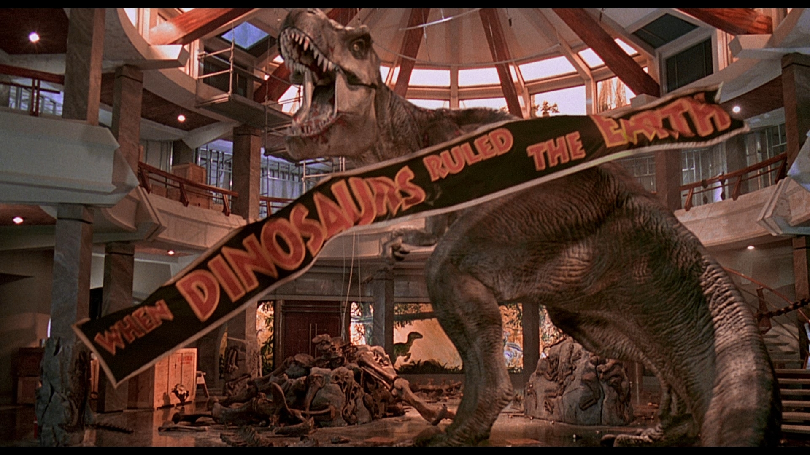
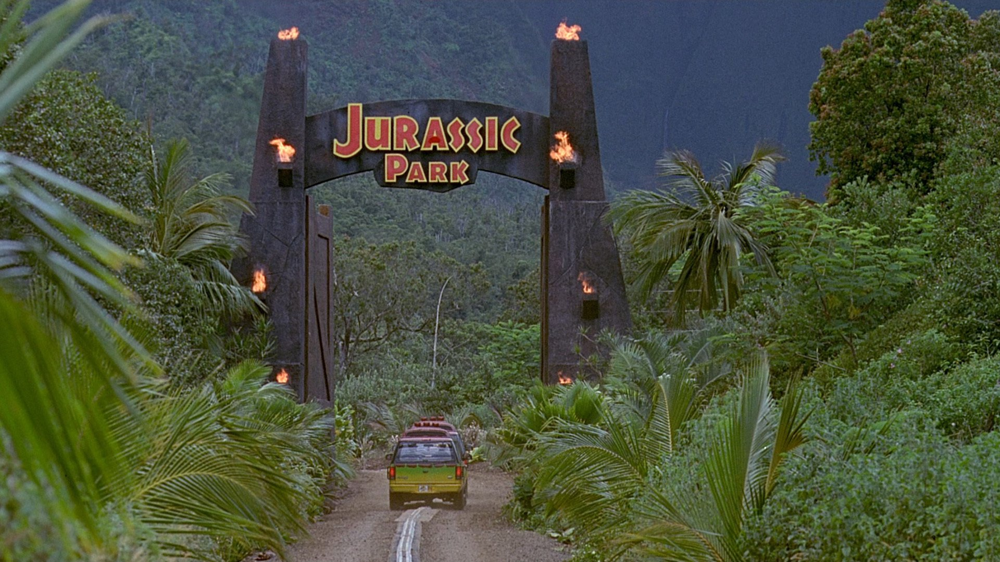
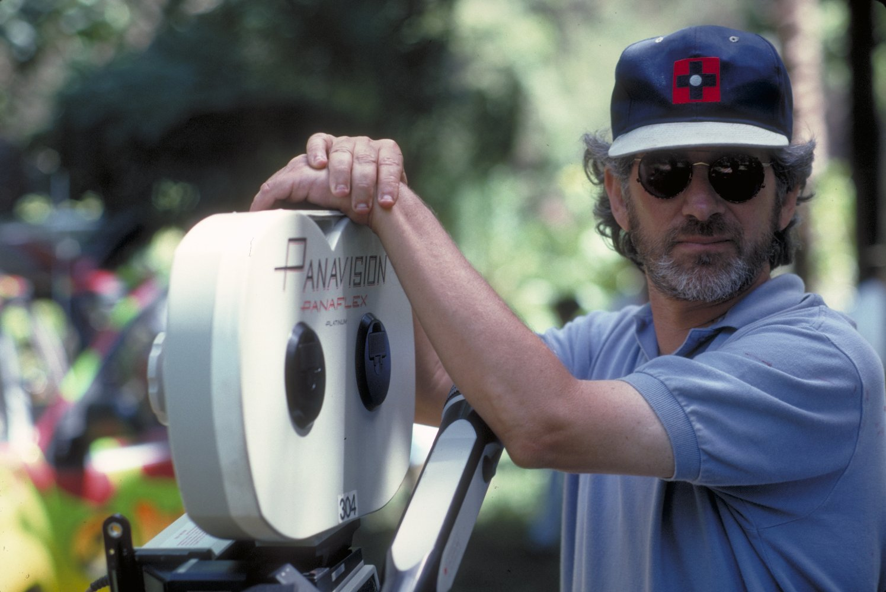

Huge advancements in scientific technology have enabled a mogul to create an island full of living dinosaurs. John Hammond has invited four individuals, along with his two grandchildren, to join him at Jurassic Park. But will everything go according to plan? A park employee attempts to steal dinosaur embryos, critical security systems are shut down and it now becomes a race for survival with dinosaurs roaming freely over the island.
The end scene
The Gate of the island
One of the most influential personalities in the history of cinema, Steven Spielberg is Hollywood's best known director and one of the wealthiest filmmakers in the world. He has an extraordinary number of commercially successful and critically acclaimed credits to his name, either as a director, producer or writer since launching the summer blockbuster with Jaws (1975), and he has done more to define popular film-making since the mid-1970s than anyone else.
If you want nothing to happen